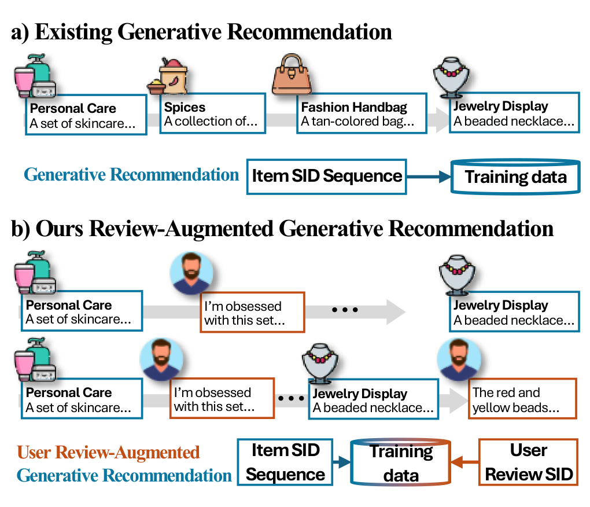
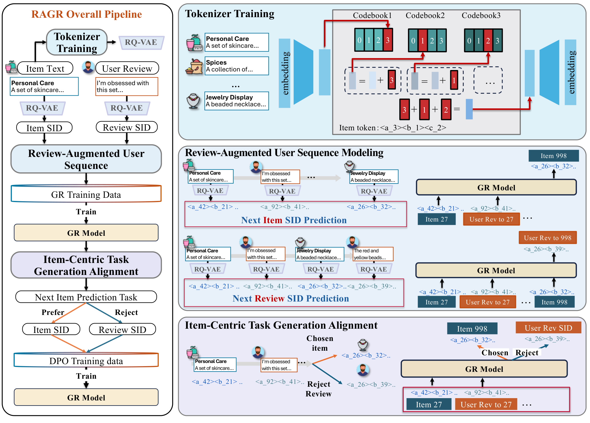
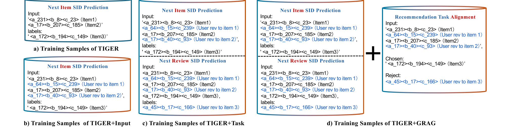
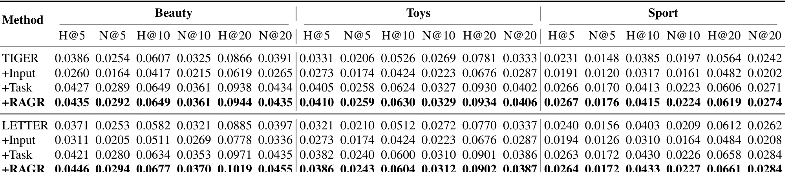
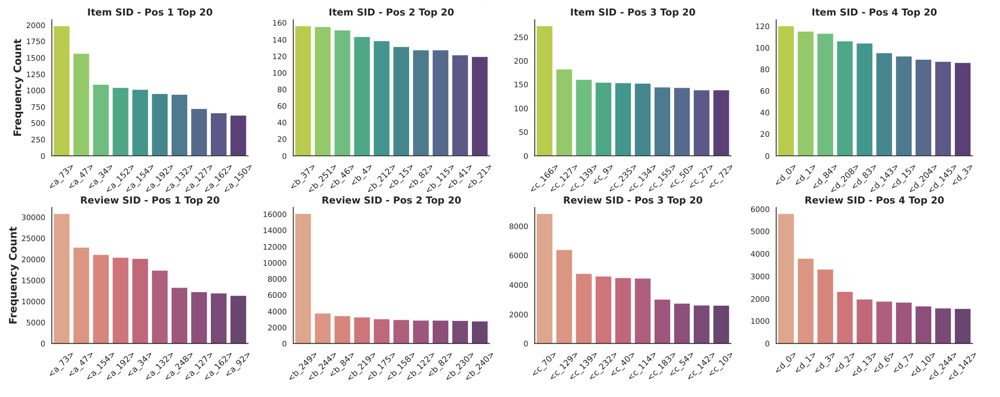

这里重新精读一篇最近公开的论文《RAGR: Review-Augmented Generative Recommendation》。中文可以叫《评论增强的生成式推荐》。
论文链接：https://arxiv.org/abs/2605.17267 PDF：https://arxiv.org/pdf/2605.17267 代码/项目页：https://github.com/Zhang-Yingyi/TKDE_RAGR 公开日期：2026-05-17，来源：arXiv cs.IR，arXiv ID：2605.17267。
0. 导读
这篇论文讨论的是生成式推荐中一个很具体、但很容易被忽略的问题：现有 generative recommendation 通常只把用户历史看成 item semantic ID 的序列。这样的序列能表达“用户交互了什么”，但表达不了“用户为什么交互”。在 Amazon 这类电商数据里，review 往往包含非常细的偏好线索，例如材质、尺寸、颜色、耐用性、礼物场景、是否适合某类人群、是否性价比高。RAGR 的核心判断是：如果生成式推荐已经把 item 文本离散成 semantic ID，那么 review 文本也可以被离散成 semantic ID，并且不应该只作为辅助特征放在模型旁边，而应该进入同一个自回归用户序列。
这篇文章的价值不在于“用了 review”这件事本身，因为 review-aware recommendation 已经有很多旧工作；它真正有意思的地方在于把 review 纳入生成式推荐的 token 空间，并且意识到这样会引入一个新问题：模型可能在预测位置生成 review token，而不是生成目标 item token。因此作者又加了一个 item-centric task generation alignment，用 DPO 把 item semantic ID 设为 chosen output，把对应 review semantic ID 设为 rejected output。也就是说，RAGR 让 review 参与用户状态建模，但不让 review 抢走推荐目标。
1. 背景与问题
生成式推荐这几年最核心的变化，是把推荐从“在候选集合里打分”改写成“生成下一个物品的离散标识”。TIGER 这一类方法先用文本编码器和残差量化，把每个 item 映射成多层 semantic ID，例如 <a_231><b_8><c_23>。之后模型看到用户历史 item 的 semantic ID 序列，像语言模型预测下一个词一样，预测目标 item 的 semantic ID。这个范式的优势是统一、可扩展，尤其适合把召回和生成建模结合起来；它的劣势也很直接：用户历史被压成 item token 后，很多解释性反馈丢失了。
传统序列推荐也有同样问题，但在生成式推荐里更突出。因为 semantic ID 看似比原始 item ID 更有语义，但它主要来自 item 侧文本或 item embedding，代表的是物品自身属性。用户对同一个物品的评价原因可能完全不同。一个用户买护肤套装是因为包装好看，一个用户是因为敏感肌适用，一个用户是因为送礼体面。如果序列里只有 item SID，模型只能知道三个人都买过同一类物品，却很难知道后续应该沿着哪个偏好维度继续推荐。
RAGR 把问题拆成两个层面。第一层是信息建模问题：review 里有用户主观偏好，不能只当 side information 在打分阶段拼接，而应该成为用户行为序列的一部分。第二层是任务边界问题：一旦 review token 进入自回归序列，模型的下一个 token 目标就不再天然等价于“下一个 item”。如果训练任务设计不好，模型会把 review SID 当作和 item SID 同等的生成目标，推荐任务会变成混合文本语义生成任务，最终削弱 item retrieval 的目标。因此，RAGR 不是简单地“加 review”，而是要同时解决 review 如何进入序列、进入序列后如何保持 item-centric prediction。
这也是它和一般 LLM4Rec 工作的区别。很多 LLM4Rec 会把用户历史、item 文本、review 拼成 prompt，让大模型做排序或解释；RAGR 仍然站在生成式推荐框架里，用离散 SID 和自回归训练来处理推荐任务。它更像是在 TIGER/LETTER 的 tokenization 范式上打补丁：保留生成式召回的结构优势，同时把用户解释性反馈补进 token 序列。
2. 核心方法
RAGR 的 pipeline 分成三段：tokenizer training、review-augmented user sequence modeling、item-centric task generation alignment。第一段负责把 item 和 review 都变成离散 token，第二段负责把二者组织成训练序列，第三段负责把目标重新拉回 next-item recommendation。
Tokenizer 部分沿用生成式推荐常见的 RQ-VAE 思路。论文使用 T5 作为文本编码器，先得到 item 文本和 review 文本的向量，再用 RQ-VAE 把连续向量量化成多层 semantic ID。文中实现细节里提到 RQ-VAE 使用六层 encoder/decoder MLP，隐藏维度为 [2048, 1024, 512, 256, 128, 64]，残差 codebook 数量设为 4。这个配置很重要，因为 RAGR 后面所有序列都是由这些 SID 拼起来的。如果 tokenizer 学得太粗，item 和 review 的语义区别会被压扁；如果 tokenizer 太细，生成难度和碰撞控制又会变复杂。
第二段是 Review-Augmented User Sequence Modeling。设用户历史有 item i_t 和对应 review r_t，原始生成式推荐只会把历史写成 z(i_1), z(i_2), ...。RAGR 改成 z(i_1), z(r_1), z(i_2), z(r_2), ...。这个看似简单，但含义很强：review 不再只是 item 的附属文本，而是用户状态的一次显式更新。item token 表示用户选择了某个物品，review token 表示用户对这个选择的主观反馈。模型在下一步预测目标 item 时，可以同时利用“买过什么”和“怎么评价过”。
训练任务也不只是一种。论文的消融里逐步引入三种训练样本：原始 TIGER 的 next item SID prediction；加入 review 后的 next item SID prediction；再加入 next review SID prediction；最后用 DPO 做 recommendation task alignment。这样设计的原因是，如果只把 review 插进输入，但不让模型学习 review 的生成规律，review token 可能只是噪声。如果让模型同时学习 review 预测，模型能更好地理解 item 和 review 的语义对应关系，但也会引入目标混淆。因此最后需要 DPO 对齐。
DPO 部分是这篇论文方法上的关键。对每个目标交互，构造同一个上下文 x_t，chosen output 是目标 item SID z(i_t)，rejected output 是该交互对应的 review SID z(r_t)。DPO 的相对偏好分数比较当前模型 pi_theta 相对 reference model pi_ref 对 chosen 和 rejected 的概率提升，再用 sigmoid loss 优化。直观理解就是：在同样的 review-augmented context 下，review 应该帮助模型判断下一个 item，但预测位置应该偏向 item SID，而不是偏向 review SID。这个目标把 review 固定在“证据”位置，而不是让它变成“答案”位置。
这个设计有一个工程上的好处：它可以作为 wrapper 加在已有 generative recommender backbone 上。论文分别把 RAGR 实例化到 TIGER 和 LETTER 上，得到 TIGER+RAGR 和 LETTER+RAGR。也就是说，RAGR 不是要替换 SID 生成式推荐，而是为已有 backbone 增加 review-aware sequence construction 和 alignment stage。
3. 图表解读

图 1 是全文动机图。左侧现有生成式推荐只用 item SID sequence，用户交互被看成一个个物品 token。右侧 RAGR 在 item SID 之间插入 review SID，让用户序列从“行为序列”变成“行为加反馈序列”。图中用珠子、护肤品、项链等商品示例说明：item 自身文本描述和用户评论是两类不同信号。item 文本描述的是物品是什么，review 描述的是用户为什么选择、喜欢或不喜欢。工程上这张图提醒我们，行为日志中的显式反馈文本如果只在特征侧使用，就没有真正进入序列模型的状态转移。RAGR 的核心就是把 review 变成和 item 同级的 token 事件。

图 2 是 RAGR 的总框架。左上是 tokenizer training，把 item text 和 user review 都送入文本编码器和 RQ-VAE，得到 item SID 与 review SID。中间是 review-augmented user sequence modeling，模型输入不再是单纯 item 序列，而是 item SID 和 review SID 的交替序列。右下是 item-centric task generation alignment，用 chosen/reject 训练对让模型偏向目标 item SID。这个图最值得注意的是三段之间的因果关系：没有 tokenizer，review 无法进入统一 token 空间；没有序列建模，review 只能作为边缘辅助特征；没有 DPO 对齐，review 又可能干扰 next-item prediction。

图 3 展示消融训练样本的构造。原始 TIGER 只看 item1、item2 并预测 item3。TIGER+Input 把 item1 的 review、item2 的 review 插入输入，但预测目标仍是 item3。TIGER+Task 进一步让模型在 item3 后预测 user review to item3，这相当于让模型学习 review 作为序列事件的生成规律。最终的 RAGR 样本在同一上下文下构造 chosen item3 和 rejected review3，用偏好优化强化推荐目标。这个图很清楚地说明：RAGR 不是一次性加一个模块，而是逐步解决“输入扩展、任务扩展、任务对齐”三个问题。

表 III 是关键消融。直接看 TIGER 组，单纯 +Input 反而下降很明显，例如 Beauty HIT@5 从 0.0386 掉到 0.0260，Toys HIT@5 从 0.0331 掉到 0.0273。这说明把 review token 粗暴塞进输入并不天然有益，模型可能被更长、更杂的序列扰乱。加入 +Task 后指标明显恢复并超过原始 TIGER，说明让模型显式学习 review 预测能帮助它理解 review token 的位置和语义。完整 +RAGR 通常达到最好或并列最好，说明 DPO alignment 在任务边界上仍有增益。LETTER 组也有类似趋势：+Input 常常下降，+Task 提升，+RAGR 最稳。这个表支撑了论文最重要的结论：review augmentation 和 item-centric alignment 都是必要的。

图 4 比较 item SID 和 review SID 的频率分布。可以看到 review SID 的高频 token 分布和 item SID 并不一样，且在不同 position 上呈现更丰富的模式。它说明 review 不是 item text 的简单重复，而是提供了另一个语义视角。工程上这也带来风险：如果 review token 分布过于偏斜，模型可能学到评论模板、情绪词或常见表达，而不是稳定偏好；如果把 review 和 item 混在一个 tokenizer 里，可能改变 item token 空间的质量。这也解释了后面 tokenizer 实验中 item-text-only tokenizer 反而更稳。
4. 实验与结果
论文使用 Amazon Review 数据集中的 Beauty、Toys and Games、Sports and Outdoors。它们同时有用户交互记录和用户评论，适合评估 review-augmented recommendation。评测指标是序列推荐常用的 HIT@K 和 NDCG@K，K 包括 5、10、20。baseline 分两组：传统序列推荐包括 GRU4Rec、BERT4Rec、SASRec、S3-Rec；生成式推荐包括 TIGER 和 LETTER。RAGR 主要验证它能否增强已有 generative recommender，因此重点看 TIGER+RAGR 和 LETTER+RAGR 相对各自 backbone 的提升。
主结果表显示，RAGR 在三个数据集、多个指标上都有稳定收益。以 TIGER 为例，Beauty 上 HIT@5 从 0.0386 提升到 0.0435，相对提升 13%，NDCG@5 从 0.0254 到 0.0292，相对提升 15%；Toys 上提升更明显，HIT@5 从 0.0331 到 0.0410，相对提升 24%，NDCG@5 从 0.0206 到 0.0259，相对提升 26%；Sport 上 HIT@5 从 0.0231 到 0.0267，相对提升 16%。LETTER 也被增强，例如 Beauty HIT@5 从 0.0371 到 0.0446，相对提升 20%。这些数字说明 review 信号不是只对弱模型有效，在较强的 generative backbone 上也能继续提供增益。
消融实验比主结果更有信息量。单独加入 review input 经常使效果下降，说明序列变长和 token 类型混杂会伤害原任务。加入 review task 后明显变好，说明模型需要理解 review token 自身的生成逻辑。最后加入 DPO alignment 后，指标进一步稳定提升。这个现象很符合推荐系统里的经验：任何新信号进主链路，都要处理噪声、位置、目标函数三件事。只加特征不改目标，未必有收益。
Tokenizer 实验也很实用。作者比较 item text-only、review text-only、item and review text 三种 RQ-VAE 训练策略。结果是 item text-only 在多数设置下最好，而且训练速度最快，约 2s/epoch；review text-only 约 29s/epoch，item and review text 约 33s/epoch。碰撞率并不能完全解释下游效果。这个结论有点反直觉：review 对推荐有用，但不代表 tokenizer 应该用 review 训练。更合理的理解是，item SID 空间需要稳定、可生成、可区分；review 适合进入用户序列作为上下文证据，而不是扰动 item tokenizer 的基准空间。
SID 数量实验显示，SID 越长碰撞率越低，例如 Beauty 上 3 个 token 的 collision rate 是 0.0121，4 个 token 降到 0.0009，5 个 token 降到 0.0007。但性能不是单调的，4 个 semantic ID tokens 整体最好。短 SID 容易碰撞，长 SID 虽然更可区分，但生成难度变大、错误传播更严重。这对所有 SID 推荐工作都重要：减少 collision 不是唯一目标，还要考虑生成模型能否稳定解码。
5. 我的理解
我认为 RAGR 最值得看的点不是 review-aware 本身，而是它把“用户反馈文本”放到了生成式推荐的序列建模位置。传统推荐里，我们常常把 review、问答、商品详情、图片等内容特征放在 item encoder 里，或者放在 ranker 的 side feature 里。但生成式推荐的核心状态是 token sequence，如果一个信号没有进入 token sequence，它对自回归用户状态的影响就有限。RAGR 证明 review 可以成为 sequence event，这个方向很值得延展。
这篇论文也提醒我们，生成式推荐不是只要把更多语义 token 塞进去就会变好。+Input 下降是一个很好的负例。对一个已经训练成“预测下一个 item SID”的模型来说，突然加入 review SID 会改变序列分布、位置间隔和 token 类型。如果没有额外任务让模型理解 review token，也没有 alignment 约束预测位置，模型很容易迷失。这个结论对 LLM4Rec 也适用：prompt 里加更多信息不一定有用，关键是信息的位置、目标函数和输出约束。
RAGR 可能被高估的地方在于，Amazon review 数据比较适合这类方法，因为 review 与 item 偏好高度相关且结构相对清晰。在真实电商线上，评论有延迟、稀疏、偏激、刷评、模板化、时效性差等问题。很多用户点击、加购、购买时还没有写 review，review 更多是事后反馈。因此线上使用时不能简单假设每个交互都有 review SID。更现实的方式可能是把 review 作为 item 侧聚合反馈、用户侧长期偏好摘要，或者只在有高质量 review 的场景中插入序列。
另一个重要连接是 DPO。论文把推荐目标做成 chosen item SID vs rejected review SID，这其实是后训练思想在推荐任务中的小型迁移。未来可以把 chosen/rejected 扩展成更复杂的偏好对，例如高评分 item vs 低评分 item、购买 item vs 仅点击 item、长期满意 item vs 短期冲动 item。这样生成式推荐的 alignment 不一定局限于“别生成 review”，而可以对齐更真实的业务目标。
6. 工程启发与复现建议
最小复现可以从公开 Amazon Review 数据集开始，选 Beauty 或 Toys 单数据集，先复现 TIGER 的 item SID tokenizer 和 next item generation。第一步不要急着做 DPO，先构造 item-review interleaved sequence，观察 +Input 是否也会下降。如果下降，说明数据处理和 token 类型混杂复现了论文现象。第二步加入 next review SID prediction，让模型同时学 item 与 review 的序列关系。第三步再构造 DPO triples，把 target item SID 作为 chosen，把 target review SID 作为 rejected。
实现时需要关注几个超参：SID 层数、每层 codebook 大小、review 最大长度、用户历史截断长度、item token 与 review token 是否共享词表、DPO 的 beta、DPO 训练轮数。论文中 4 个 SID tokens 是比较好的平衡点，但不同数据集未必一致。review 处理也很关键，原始 review 很长时要选择摘要、截断还是完整编码；低质量 review 是否过滤也会影响 token 分布。
离线评测建议除了 HIT/NDCG，还要看两类诊断指标：一是 review token 生成比例，确认模型是否在 item prediction 位置误生成 review SID；二是不同 review 覆盖率用户上的分组效果，判断方法是否只对高活跃、高评论用户有效。如果要迁移到工业系统，可以先在重排或召回实验里离线模拟，不建议直接把 review token 接入线上主召回，因为序列长度和数据延迟会带来明显成本。
7. 局限与风险
-
review 覆盖率问题。很多用户交互没有对应 review，或者 review 是很久之后才产生的事后反馈。训练时能看到 review，不代表线上推理时能看到同等质量的 review。若处理不好，会出现训练和推理分布不一致。
-
review 质量问题。评论可能包含噪声、情绪宣泄、广告、刷评和无关内容。把这些文本离散成 SID 后，噪声会进入主序列，比普通 side feature 更难隔离。
-
序列长度成本。每个 item 后再插入 review SID，会显著增加用户序列长度。对于长历史用户，这会提高训练成本和推理 latency，也会挤占最近行为的上下文预算。
-
DPO 负样本定义较窄。论文的 rejected output 是 review SID，这能防止模型生成 review，但不能保证推荐结果一定符合长期满意度或业务目标。更丰富的偏好对还需要额外设计。
-
tokenizer 泛化风险。item text-only tokenizer 在实验中最好，但 review SID 仍依赖同类量化机制。跨品类、跨语言或多模态商品下，SID 空间可能需要重新设计。
-
离线指标外推风险。Amazon 数据集上的 HIT/NDCG 提升不等于线上 GMV、留存或满意度提升。review 信号可能更偏向愿意写评论的用户，存在样本选择偏差。
8. 后续跟进
-
跟进 GitHub 代码中 tokenizer、DPO beta 和数据预处理的实现细节，尤其是 review 缺失样本如何处理。
-
对比 REG4Rec、RecZero、SAPO 等把 reasoning/alignment 引入生成式推荐的工作，看 DPO-style alignment 是否能统一成更一般的推荐后训练框架。
-
在更真实的电商数据上测试评论延迟和评论缺失问题，例如只使用历史已产生 review，而不是使用目标交互的未来 review。
-
尝试把 review 换成问答、售后、长文本评价摘要或多模态内容反馈，验证“反馈 token 作为序列事件”的泛化性。